CPU-assisted IBGDA 与 DeepEP NVSHMEM：原理、部署和实验
基础篇 B · 建议在 IBGDA 原理之后阅读 · 目标：理解三种控制面实现，知道 DeepEP 初始化了什么，并能设计有证据的部署检查与对照实验。
研究日期：2026-09-23。项目源码基线：01dc3aaac82068020353dce2c302e38153c0bfaa。本篇将 NVIDIA NVSHMEM 3.0 的 CPU-assisted 文章与项目 docs/nvshmem.md 合并讲解。配置要求以目标软件版本和机器为准；下文 Linux 命令是供集群执行的教程，编写时没有修改驱动或运行集群测试。
六篇总目录 · 前一篇：IBGDA 原理 · V1 SM · V1 LL
1. 为什么还需要 CPU-assisted 模式
traditional IBGDA 需要 GPU 能够访问相应 NIC 控制资源。某些部署无法方便地满足映射或管理配置要求。CPU-assisted 保留 GPU 生成 work request，把 NIC doorbell 辅助交给 CPU，因此可以放宽部分部署限制。这是 NVSHMEM 3.0 引入的中间模式。NVIDIA 原文
对 DeepEP 读者最重要的问题是：GPU 是否仍在构造 WQE，以及提交进度由谁推进。只看到 CPU 线程活跃，无法认定系统退回了普通 proxy；同样，设置 NVSHMEM_IB_ENABLE_IBGDA=1 也不能单独证明 GPU 正在直接写 doorbell。
2. 三种实现的职责对照
| 职责 | 普通 CPU proxy | CPU-assisted IBGDA | traditional IBGDA |
|---|---|---|---|
| GPU 提出通信意图 | 是 | 是 | 是 |
| 生成 NIC work request | CPU transport | GPU | GPU |
| 发布待处理前缀 | proxy 自身队列协议 | GPU 发布 producer index | GPU 发布 ready 前缀 |
| NIC doorbell | CPU | CPU helper | GPU |
| 传输 payload | NIC DMA | NIC DMA | NIC DMA |
| host 初始化 | 仍需要 | 仍需要 | 仍需要 |
| 典型取舍 | 控制面兼容性与 CPU 请求率 | 部署弹性与 helper 延迟 | GPU 直接控制与映射要求 |
此表中 proxy/traditional 的概念来自 NVIDIA IBGDA 原理，CPU-assisted 职责来自上面的 NVSHMEM 3.0 文章；DeepEP 两分支的代码证据见第 4 节。
3. 从初始化到每条消息的代码框图

查看 Mermaid 图源码
flowchart TB
A[各 rank 创建 Python Buffer] --> B[配置 NVSHMEM 环境并交换 unique ID]
B --> C[C++ 选择 PE rank 与 world size]
C --> D[NVSHMEM init / heap 注册 / QP 与 key 表]
D --> E[CUDA warp 生成 WQE]
E --> F{use_async_postsend}
F -->|false| G[GPU ready_head]
G --> H[GPU post_send / DBR / doorbell]
F -->|true| I[GPU 发布 tx_wq.prod_idx]
I --> J[NVSHMEM CPU helper 辅助提交]
H --> K[NIC 执行 RDMA]
J --> K
K --> L[CQ 完成与应用 count / flag]DeepEP 仓库没有完整 NVSHMEM transport 的 host helper 实现；它提供 GPU helper、NVSHMEM 初始化封装和使用方法。要继续研究 CPU helper 的实际 poll/batch 策略，应下载与目标安装版本一致的 NVSHMEM 源码。不要把 DeepEP 中没出现的 CPU 函数名想象成项目实现。
4. 核心代码：分支由状态决定
来自 ibgda_submit_requests，省略函数签名与局部指针初始化：
uint64_t new_wqe_idx = base_wqe_idx + num_wqes;
__threadfence();
unsigned long long int* ready_idx =
(unsigned long long int*)(state->use_async_postsend
? qp->tx_wq.prod_idx : &mvars->tx_wq.ready_head);
while (atomicCAS(ready_idx, base_wqe_idx, new_wqe_idx) != base_wqe_idx)
;
if (!state->use_async_postsend) {
constexpr int kNumRequestInBatch = 4;
if (kAlwaysDoPostSend or (message_idx + 1) % kNumRequestInBatch == 0)
ibgda_post_send(qp, new_wqe_idx);
}逐段阅读：new_wqe_idx 是本次区间的末尾；__threadfence 排序 WQE 写入；CAS 等前驱区间填完。两种模式都需要形成无空洞前缀。区别在于更新哪个位置，以及 GPU 是否调用 ibgda_post_send。
use_async_postsend=true 时，GPU 仍已写好 WQE，后续由 NVSHMEM 的辅助机制处理 NIC 通知。false 时，GPU 在强制提交或消息编号达到批次边界时主动 post。数字 4 来自当前 helper 的批量策略，不是“每个模式固定一次只传 4 个 token”的算法约束。
4.1 GPU 直接提交为什么还需要锁
ibgda_post_send 中有：
ibgda_lock_acquire(&mvars->post_send_lock);
old_prod_idx = atomicMax(
reinterpret_cast<unsigned long long int*>(&mvars->tx_wq.prod_idx),
new_prod_idx);
if (new_prod_idx > old_prod_idx) {
ibgda_update_dbr(qp, new_prod_idx);
ibgda_ring_db(qp, new_prod_idx);
}
ibgda_lock_release(&mvars->post_send_lock);多个执行者共享 QP 时，先保护 doorbell 更新，再通过 atomicMax 防止提交位置倒退。CAS 发布解决“WQE 是否填完”，post-send lock 解决“谁更新 NIC 通知”；它们承担不同职责。若性能分析看到这里有竞争，应先检查 QP 映射与并发粒度，再决定是否增加 QP。
5. Python 初始化：环境变量不是孤立开关
legacy.py:105 的节选：
if self.runtime.get_num_rdma_ranks() > 1 or low_latency_mode:
assert num_qps_per_rank > 0
os.environ['NVSHMEM_DISABLE_P2P'] = '0' if allow_nvlink_for_low_latency_mode else '1'
os.environ['NVSHMEM_IB_ENABLE_IBGDA'] = '1'
os.environ['NVSHMEM_IBGDA_NUM_RC_PER_PE'] = f'{num_qps_per_rank}'
self.nvshmem_qp_depth = int(os.environ.get('NVSHMEM_QP_DEPTH', '1024'))
os.environ['NVSHMEM_QP_DEPTH'] = str(self.nvshmem_qp_depth)
# ... 其他环境变量与 unique ID 交换 ...这些赋值发生在 NVSHMEM 初始化之前。代码会覆盖其中一些环境变量，因此 shell 中的设置不一定就是最终值。当前项目没有在这里固定 NVSHMEM_IBGDA_NIC_HANDLER，具体 handler 模式需要结合所安装 NVSHMEM 的配置与运行日志确认。NVSHMEM 环境变量参考
| 项目设置 | 源码行为 | 研究时要记录什么 |
|---|---|---|
NVSHMEM_IB_ENABLE_IBGDA=1 |
请求启用 IBGDA | transport 是否真正启用及其 handler |
NVSHMEM_IBGDA_NUM_RC_PER_PE |
由构造参数写入 | 每 PE 连接资源与 local expert 数 |
NVSHMEM_QP_DEPTH |
从环境读值，缺省 1024 | 消息在途规模与 WQE 拆分 |
NVSHMEM_DISABLE_P2P |
由允许 NVLink 的选项决定 | 是否强制网络，避免错误对比 |
NVSHMEM_CUMEM_GRANULARITY |
固定为 2**29 |
heap 分配/注册粒度及显存容量 |
NVSHMEM_DISABLE_NVLS |
固定为 1 | 此 legacy 初始化路径不用 NVLS |
normal 的纯单节点构造且 low_latency_mode=False 不进入该分支；为兼容 LL 而启用此标志的单节点 Buffer 会初始化 NVSHMEM，但一次 normal intranode 调用的数据路径仍是 IPC/NVLink。
6. C++ bootstrap 和 symmetric heap
nvshmem::init 的主干：
nvshmemx_uniqueid_t root_unique_id;
nvshmemx_init_attr_t attr;
std::memcpy(&root_unique_id, root_unique_id_val.data(), sizeof(nvshmemx_uniqueid_t));
nvshmemx_set_attr_uniqueid_args(rank, num_ranks, &root_unique_id, &attr);
nvshmemx_init_attr(NVSHMEMX_INIT_WITH_UNIQUEID, &attr);unique ID 让各进程加入同一通信组；它不携带每个 token 的路由。后面的 team split 与 barrier 用于建立通信域并等待就绪。分配封装 nvshmem::alloc 调用 nvshmem_align(alignment, size)。
Buffer::sync 决定 normal 与 LL 的 PE 坐标，分配 RDMA buffer 并清零。调用者必须让组内进程按一致顺序执行初始化和相关 collective。一个 rank 因显存错误提前退出，其他 rank 卡在 barrier 只是后果，最早失败的 rank 才提供原因。
7. 官方部署路线怎样阅读
本地 NVSHMEM 安装说明 指明 legacy 使用 NVSHMEM 3.3.9 或更新兼容版本，并给出 traditional 驱动配置与 GDRCopy CPU-assisted 两条启用方式。版本数字属于这份源码基线的要求；部署时仍应核对目标 DeepEP 与 NVSHMEM 的配套版本。上游说明

查看 Mermaid 图源码
flowchart TD
A[确定 DeepEP commit 和 NVSHMEM 版本] --> B[核对 GPU / NIC / 网络拓扑]
B --> C[安装兼容 NVSHMEM 与运行依赖]
C --> D{部署采用何种 IBGDA 模式}
D --> E[traditional: 核对 GPU 访问 NIC 控制资源的条件]
D --> F[CPU-assisted: 核对 GDRCopy 与 gdrdrv]
E --> G[记录运行日志和实际 transport]
F --> G
G --> H[先小规模正确性，再网络路径，再性能]7.1 traditional 路线
项目文档给出的 driver 选项为 NVreg_EnableStreamMemOPs=1 和 PeerMappingOverride=1，并要求相应系统配置生效。它们属于系统部署，不能在 Python 中通过普通环境变量等价替代。具体写入、initramfs 更新和重启步骤请按 原安装说明 及集群维护流程操作。
7.2 CPU-assisted 路线
项目指向 GDRCopy 安装和 gdrdrv 加载。CPU 辅助的职责是通知 NIC，payload 依然由 NIC 传输。helper 的调度和 CPU 亲和性可能影响小消息延迟；这是待测因素，不应预先假定所有平台都会慢某个固定百分比。项目对应章节
7.3 路径、链接与运行库
在 Linux shell 中，NVSHMEM_DIR 指向安装前缀，库和工具目录需要可发现。下面是模板，替换为实际安装目录：
export NVSHMEM_DIR=/opt/nvshmem
export LD_LIBRARY_PATH="${NVSHMEM_DIR}/lib:${LD_LIBRARY_PATH}"
export PATH="${NVSHMEM_DIR}/bin:${PATH}"
nvshmem-info -anvshmem-info -a 能帮助核对安装信息，但不能独立证明 DeepEP 正在使用哪条数据路径。还要检查 Python 加载的扩展、实际动态库、初始化日志、P2P 设置和真实跨节点测试。
8. 分层检查：每一步回答一个问题
下面命令用于已配置的 Linux GPU 节点；工具不存在时记录缺项，不把缺少工具误判成硬件故障。
nvidia-smi
nvidia-smi topo -m
ibv_devinfo
nvshmem-info -a
lsmod | grep -E 'gdrdrv|nvidia_peermem'
python -c "import torch, deep_ep; print(torch.__version__, torch.version.cuda); print(deep_ep.__file__)"| 检查层 | 看什么 | 不足以证明什么 |
|---|---|---|
| GPU/驱动 | 可见设备与驱动版本 | NIC 能注册和访问 GPU 内存 |
| GPU-NIC 拓扑 | PCIe/NUMA/NVLink 关系 | 实际流量走哪条链路 |
| RDMA 设备 | 端口、设备、链路状态 | 应用正确选择 HCA 与 PE |
| NVSHMEM 安装 | 实际版本和配置 | kernel 的 put 已成功执行 |
| Python 扩展 | 导入位置和 CUDA 版本 | 编译/运行库完全兼容 |
| 最小端到端测试 | 真实 rank、数据校验与日志 | 大规模稳定性与最佳性能 |
缺少 nvidia_peermem 不自动意味着所有 GPUDirect RDMA 都不可用：一些环境采用 DMA-BUF；必须结合实际注册方式判断。本节不提供通用的一键驱动修复命令。
9. 怎样开始运行项目测试
先读取 LL 测试参数、normal internode 参数 和测试中的进程组初始化方法。以下是仓库根目录、单机八 GPU、已安装所有依赖的示例：
python tests/legacy/test_low_latency.py --num-processes 8 --num-tokens 128 --hidden 7168 --num-topk 8 --num-experts 288同形状的 --disable-nvlink 可用于研究网络路径，但它会改变拓扑路径和负载，不能把变化全部归因于 IBGDA handler。跨节点运行需按项目测试采用的 launcher/环境变量组织各节点；不要只把 --num-processes 改成总 GPU 数就当成完整多节点启动命令。
先记录正确性是否通过，再记录吞吐。测试里的 shrink/pressure 分支用于更深入的故障与重用研究，应在基础路径工作后阅读。没有真实 IB 集群时，可以完成源码追踪和地址练习，但不要生成虚构 benchmark 数字。
10. 一个可复现的研究工作流
问题示例：小 batch 的 p99 延迟是否受 CPU-assisted helper 调度影响？ 这不是由源码直接给出的结论，而是可检验的假设。
| 环节 | 具体做法 | 产物 |
|---|---|---|
| 固定版本 | commit、CUDA、NVSHMEM、驱动、NIC 固件、编译参数 | 环境清单 |
| 验证 treatment | 日志确认实际 handler，固定 P2P 设置 | 两组配置证据 |
| 控制变量 | 相同 token/top-k/hidden、rank 数、路由分布 | 实验矩阵 |
| 测量 | warmup 后多次采样，分开 CUDA kernel 与完整迭代 | 原始样本和计时定义 |
| 分析 | p50/p95/p99、均值及离散度；检查 CPU 与 GPU 重叠 | 图表及不确定性 |
| 复核 | 调换实验顺序、复跑不同日期或节点 | 稳定性说明 |
若 traditional 模式在目标环境不可用，应报告无法完成该组实验。不能把“禁用 NVLink”或“减少 QP”替代成 traditional 与 CPU-assisted 的比较。
11. 故障现象与源码落点
| 现象 | 优先检查 | 项目代码证据 |
|---|---|---|
| 初始化卡住 | 最早失败 rank、组成员、unique ID、显存分配 | nvshmem.cu |
| expert QP 断言 | local expert 数与 RC-per-PE | internode_ll.cu |
| count 永不到 | payload/通知分支、peer mapping、masked rank | internode_ll.cu |
| 第一次正常，重复错误 | ping-pong 清理、recv hook 是否完成、buffer 复用 | LowLatencyLayout |
| 错误数值但不超时 | 地址 offset、dtype/scale、source token 反向索引 | internode_ll.cu |
| 吞吐好但端到端慢 | 常驻 SM、HBM 争用、CPU sync、缺少有效 overlap | 两种 V1 实现对比 |
排障时先区分“初始化资源失败”“网络提交失败”“通知协议失败”“后处理语义错误”。调大 timeout 只能改变等待时长，不能修复丢失通知或 rank 分歧。
12. 学习顺序与验收题
第一轮只读第 1–4 节，能够指出 CPU-assisted 中 GPU 和 CPU 各自做什么。第二轮读第 5–8 节，从 Python 构造跟到 C++ bootstrap，写出最终环境与 PE 坐标。第三轮按照第 9–10 节设计实验，最后再阅读完整 LL kernel。
题 1：当前 DeepEP 是否强制 NVSHMEM_IBGDA_NIC_HANDLER=gpu？ 没有；代码显式启用 IBGDA，但 handler 需运行证据确认。
题 2：GPU 发布 producer index 后就能覆盖源 payload 吗？ 不能由这一个动作推出。发布请求与 NIC 消费源 buffer 是不同事件，需要完成机制和上层生命周期约束。
题 3：CPU-assisted 是否仍能存在 LL 的后台 RDMA 窗口？ 从调度结构看可以：SEND 返回后等待 RECV 的间隔仍存在；实际 overlap 收益需考虑 helper 延迟与资源竞争。
题 4：为什么配置教程也必须读 CUDA？ 环境决定 transport 是否可用，CUDA 分支决定这一次消息到底走 P2P 还是网络，以及用哪个 QP 发通知。
13. 延伸阅读
- IBGDA 从消息到 NIC：补全地址、WQE、CQ 的细节。
- V1 SM 实现：观察同一 IBGDA 如何服务 ring、credit 与 NVLink forwarding。
- V1 LL 实现：观察固定 buffer、负 count、hook、zero-copy 与 LogFMT。
- NCCL Device API 与 GIN：比较 V2 的 window/team/context 抽象。
本篇原理证据来自 NVIDIA 文章，部署入口来自项目安装说明，代码解释来自本地固定源码。通过这种分工，可以在升级依赖后明确知道哪一部分需要重新验证。